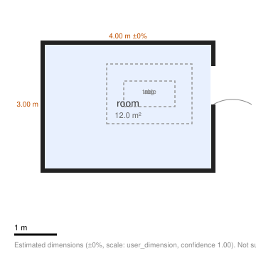

SceneForge · Vision
Your rooms,
at room scale.
The spatial cut of SceneForge: the same scenes, the same design language, tuned for eyes and hands. On a WebXR headset the walkthrough leaves the window and becomes the room around you. On a flat screen this page still works — it simply keeps the walkthrough in its glass window.
This is the bundled synthetic sample — a
procedurally generated 4×3 m room, labeled as such on its poster. The floor plan
is drawn by the pipeline's own SVG renderer; the insights come from a ground-truth
semantic document written from the generator's constants (the format a real
extraction produces — not itself an extraction). The first genuine capture replaces
all of it after the first GPU acceptance run (QUALITY.md).

Drawn by the pipeline's own
render_floorplan_svg. Dimensions carry a stated tolerance — estimates,
never survey-grade.
From semantic.json — frozen
schema 1.0.
Spatial-native
What only a headset unlocks.
These features are native to XR devices and appear only in this Vision experience. Capability chips above report what your current device actually supports — nothing here pretends.
Immersive walkthrough
One pinch on Enter VR and the splat surrounds you at true scale — the same
.ksplat the flat viewer streams, rendered stereo by WebXR. Works today on
WebXR browsers (e.g. Quest); on Safari for visionOS it lights up wherever immersive
WebXR sessions are enabled.
True-scale judgment
Because scenes carry metric scale (with a stated tolerance), room-scale viewing means "will the sofa fit" is answered by walking to where it would stand — not by squinting at numbers.
Eye & hand first
This layout follows spatial conventions: a bottom ornament instead of a top bar, 52 px-minimum targets on every control, and hover states that glow instead of repainting — friendly to eye-tracking input.
xr="vr" attribute — and only on devices whose chips read
"available."Pipeline
Built for seconds of geometry.
Feed-forward lingbot-map (Apache-2.0) is designed to recover poses in one pass rather than COLMAP's minutes — measured timings land with the first GPU acceptance run. gsplat MCMC trains a compact splat under a hard size budget; open-vocabulary detection labels rooms and objects; a confidence gate keeps every failure honest. Full detail in the 2D experience.
Create
Capture flat. Relive spatial.
Film with the phone you have — 60–120 s, slow steady pans. The scene you get back plays everywhere, and becomes immersive here.
Drop your video here
MP4 · MOV · WebM — up to 120 s
What happens next
The API's scene states, with the pipeline
stages inside processing shown for context — every state is reported,
including failure.